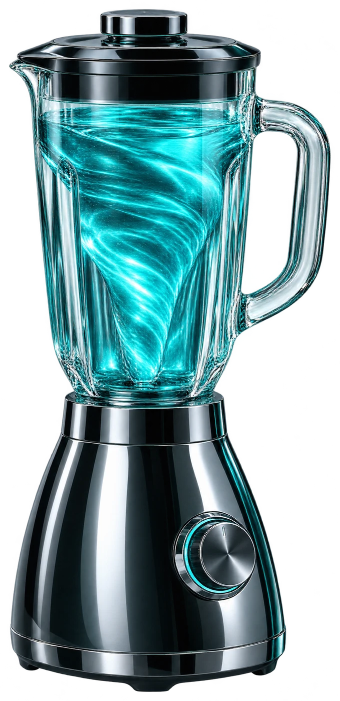
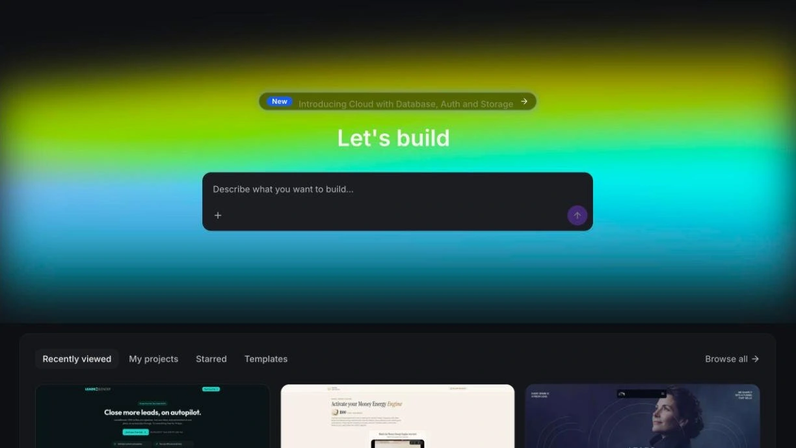
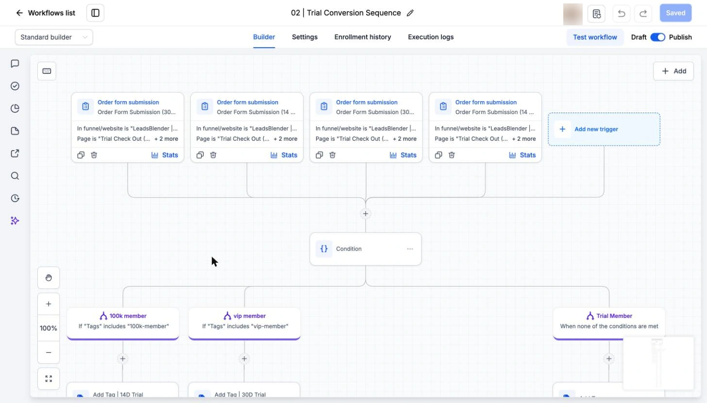

Describe it.
Start with a prompt, a template, a URL or your own images as a reference.
LEADSBLENDER / THE CONNECTED BUSINESS
A little vision. A lot of possibility.
Blend AI Studio, intelligent workflows and a checkout into one connected customer journey.

DIFFERENT INGREDIENTS. ONE BEAUTIFUL BLEND.
EVERY BUSINESS STARTS WITH AN IDEA
From a description
to an experience that works.
Create websites, landing pages, forms, booking flows and interactive projects with prompts. Refine visually or in code. Publish on your domain.
Step inside AI Studio
Your next idea starts here. SCROLL TO INSPECT ↓AI STUDIO / INSIDE THE WORKSPACE
FROM PROMPT TO PROJECT
“Build a landing page for my offer, connect the form to my CRM and let visitors book a call.”
EXAMPLE PROMPT · NOT A LIVE GENERATORStart with a prompt, a template, a URL or your own images as a reference.
Refine with prompts, visual editing and the built-in code editor.
Connect supported forms and calendars; test, publish and attach your domain.
WEBSITE ✳ LANDING PAGE ✳ FORM ✳ BOOKING ✳ WEB EXPERIENCE
FROM A SINGLE ACTION TO A CONNECTED SYSTEM
Describe your process. Let AI build the triggers and actions. Review and refine each step before going live.
See the workspace
See the steps connect. EXPLORE THE WORKSPACE ↓BEHIND THE SCENES / YOUR CONTROL ROOM
Explore the actual LeadsBlender interface: a conversion workflow, AI conversations, funnels and your course library.
Screenshots from the existing LeadsBlender project. Account avatars and unrelated project details are obscured where appropriate. Screens are examples; availability and interface details depend on your setup.
MORE INTELLIGENCE, CONNECTED TO YOUR WORK
Illustration only. No account connection is shown. Permissions and availability depend on your setup.
01 / CONNECT YOUR ASSISTANT
HighLevel’s MCP connection gives Claude access to authorized CRM data and supported actions. Ask, research and work through a conversation, within your account’s permitted scope.
CLAUDE ↔ HIGHLEVEL MCP ↔ CRM02 / CHOOSE YOUR WORKFLOW MODEL
The AI Agent action in Workflows lets you select a model, including supported OpenAI and Anthropic models. Combine instructions and permitted tools to automate tasks.
WORKFLOW ↔ AI AGENT ↔ SELECTED MODELTwo distinct routes: Claude can work with HighLevel through MCP; the AI Agent action selects a model inside a workflow. Connections, permissions and costs depend on your configuration.
THE WIDER AI TOOLKIT
AI Studio leads the way. The wider HighLevel ecosystem helps you answer, create, speak, decide and follow up. Choose what fits your process.
Your in-platform assistant for questions, content and supported actions.
Conversations with leads across supported channels: answer, qualify and book.
AI conversations through phone calls and supported voice experiences.
Autonomous tasks and visual management of flow-based agents, distinct from AI Studio.
Images, copy and email drafts for your communications.
Review suggested responses and work with approved business knowledge.
FROM EXPERIENCE TO TRANSACTION
A funnel brings your story together. A checkout lets people buy. Then the follow-up begins: the start of a relationship, not the end.
Build the experience in AI Studio and add products and a checkout managed by HighLevel.
Build with the classic funnel builder and add a one-step or two-step order form.
Both routes require a configured product and payment provider. Availability and limitations differ by route.
ON THE OTHER SIDE / THE CUSTOMER EXPERIENCE
The workspace is only half the story. Here are customer-facing pages from the existing LeadsBlender project: the landing page and the first step of its checkout.
Source-project previews, not a live checkout on this concept page. Prices and promotional copy visible inside the screenshots belong to that example and are not a current offer. No form was submitted and no payment was activated.
HOW THE PIECES FIT
No vague AI promises. Here is how the parts relate to one another.
Websites, landing pages, forms, booking flows and interactive web projects from prompts and references. You can edit, test and publish.
No. AI Studio builds web experiences. Agent Studio is for visually managing and testing flow-based AI agents.
Yes, through Payments using products from your HighLevel catalog and a connected payment provider. Not every project type or payment method is supported.
Workflow AI Builder can generate triggers and actions from a description and configure them with account records. You review, test and refine the automation.
Claude can work with your CRM through an authorized HighLevel MCP connection. Inside the Workflow AI Agent action, you can also choose supported providers, including OpenAI and Anthropic.
Use the funnel builder with an order form, or an AI Studio project with Payments. Connect your product, test checkout and configure a workflow to respond to the order.
LEADSBLENDER / CREATE · AUTOMATE · SELL
Build, connect and sell with the tools that fit your business.
Explore the trial